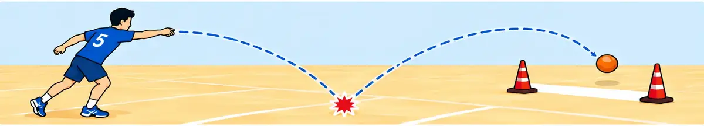
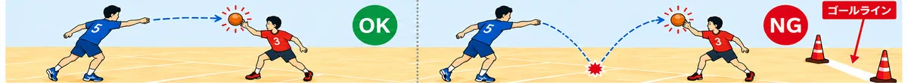
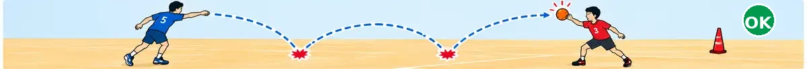

競技の特徴
弾球では、ハンドボールのような攻撃側が入れないゴールエリアを設けません。攻撃側も守備側もゴール付近まで移動できます。
なぜワンバウンド？
ゴールエリアをなくすと、ゴール直前からの直接シュートが有利になります。そこで、得点するにはボールを一度地面にバウンドさせてからゴールラインを越す必要があります。
また、バウンド後を待って守るだけにならないよう、1回目のバウンドから2回目のバウンドまでは守備側はシュートに触れません。2回目のバウンド後は再び守備できます。
基本ルール
11回バウンドしてからゴール
ボールが地面で1回バウンドした後に、ゴールラインを越えると得点です。ノーバウンドでは得点になりません。

21回目のバウンド後はブロックできない
バウンド前は守備側もボールに触れます。1回目のバウンドから次に地面に着くまでは、手や腕でシュートをブロック・キャッチできません。

32回目のバウンド後は再び守備できる
2回目に地面へ着いた後は、守備側は再びボールをブロック・キャッチできます。

4その他の基本ルール
ドリブル、歩数、選手同士の接触などは、基本的にバスケットボールのルールを参考にします。
ボール 未定
大きさ・重量などは未定です。ドッジボール、サッカーボール、バレーボールなどに近いものを候補としています。
試合形式
人数 仮
1チーム5人を基本案としています。
勝敗 仮
5点先取の3セット制。先に2セットを取ったチームの勝利です。
時間制限
現時点では、試合時間・攻撃時間ともに制限を設けない予定です。
コートとゴール
- コート 仮
- バスケットボールコートと同程度の大きさを基本案としています。
- ゴールエリア
- 設けません。攻撃側・守備側ともにゴール付近まで移動できます。
- ゴール
- ゴールラインを設定できれば競技できます。専用のゴール設備は不要です。高さは未定で、高さを設定しない方式も候補です。
- ゴール幅
- セットごとに変更できる方式を検討しています。試合前のコイントスまたはジャンケンと、前セットの勝敗によって決定権を交代させる案です。
その他のルール
反則による一時退場 仮
反則をした選手は、攻守が入れ替わるまで一時退場とする案です。
アウト・オブ・バウンズ
ボールがコート外に出た場合は、最後に触れたチームに関係なく守備側のボールとなります。攻撃側・守備側の判断は審判が行います。
キック 仮
基本案では攻撃側のキックは禁止です。両チームが合意した場合に限って認める案も検討しています。その場合、膝より高い位置のボールは蹴れず、蹴ったボールは1バウンド後でも守備側がブロックできます。
検討中の項目
| 項目 | 現在の案 |
|---|---|
| 正式名称 | 「弾球」は仮名称 |
| 人数 | 5人 |
| ボール | 未定 |
| ゴールの高さ | 未定 |
| ゴール幅 | 具体的な幅・決定方法を検討中 |
| 試合形式 | 5点先取・3セット制 |
| 反則 | 一時退場の詳細を検討中 |
弾球は現在ルールを試作している段階です。実際のプレーを通じて変更する可能性があります。